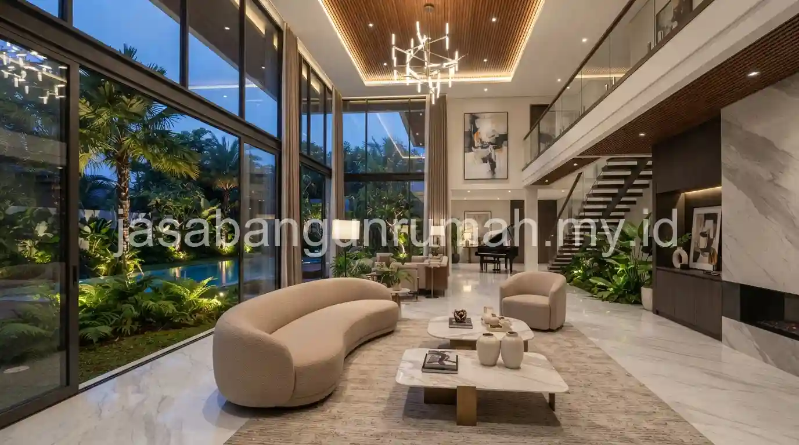

Daftar Isi
Jasa kontraktor rumah mewah Surabaya menangani pembangunan rumah custom dengan perhatian khusus pada detail finishing dan material premium, didukung pengawasan lapangan yang lebih ketat dibandingkan proyek rumah standar.
Apa Saja Layanan yang Tercakup dalam Jasa Kontraktor Rumah Mewah Surabaya?
Layanan mencakup pembangunan rumah custom dari struktur hingga finishing dengan spesifikasi material premium, seperti marmer, kayu solid, kaca tempered besar, hingga sistem smart home sesuai permintaan klien.
Selain pembangunan fisik, tim juga menangani koordinasi dengan arsitek dan desainer interior apabila diperlukan, memastikan hasil akhir bangunan sesuai dengan visualisasi desain yang telah disepakati sejak awal.
Proyek rumah mewah biasanya melibatkan lebih banyak detail kustomisasi dibandingkan rumah standar, sehingga komunikasi intensif antara klien dan tim kontraktor menjadi bagian penting dari proses kerja sama.
Bagaimana Kontraktor Memastikan Detail Finishing Tetap Rapi pada Proyek Premium?
Detail finishing pada proyek rumah mewah dijaga melalui pengawasan lapangan yang lebih ketat, termasuk pemeriksaan kerapian sambungan material premium seperti marmer atau kayu solid yang membutuhkan ketelitian tinggi dibandingkan material standar.
Tim biasanya melibatkan tukang dengan keahlian khusus untuk pengerjaan material premium, mengingat kesalahan kecil pada pemasangan material seperti marmer dapat terlihat jelas dan sulit diperbaiki tanpa mengganti seluruh bagian yang rusak.
Pemeriksaan berkala pada setiap tahap finishing dilakukan untuk memastikan hasil akhir sesuai standar kualitas premium yang menjadi ciri khas proyek rumah mewah.

Apakah Tersedia Garansi Khusus untuk Proyek Rumah Mewah Ini?
Garansi struktur tetap berlaku untuk proyek rumah mewah, dengan cakupan yang disesuaikan mengingat kompleksitas material dan sistem yang digunakan, termasuk garansi tambahan untuk instalasi khusus seperti sistem smart home apabila diterapkan pada proyek.
Cakupan dan ketentuan garansi untuk proyek rumah mewah sebaiknya dibahas secara detail dalam kontrak kerja, mengingat nilai investasi pada material dan sistem premium yang digunakan cukup signifikan dibandingkan proyek rumah standar.
Wilayah layanan kontraktor ini mencakup Surabaya dan sekitarnya, dengan tim yang dapat dijadwalkan untuk survey lokasi dan diskusi konsep awal sesuai kebutuhan klien. Bagi pemilik lahan di Surabaya yang ingin mewujudkan rumah mewah dengan detail finishing rapi dan spesifikasi premium, dapat menghubungi tim jasa kontraktor rumah profesional kami untuk menjadwalkan konsultasi awal dan survey lokasi secara gratis.